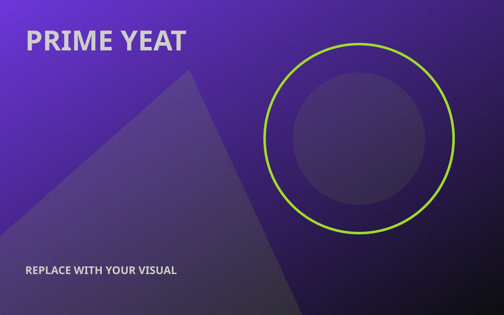
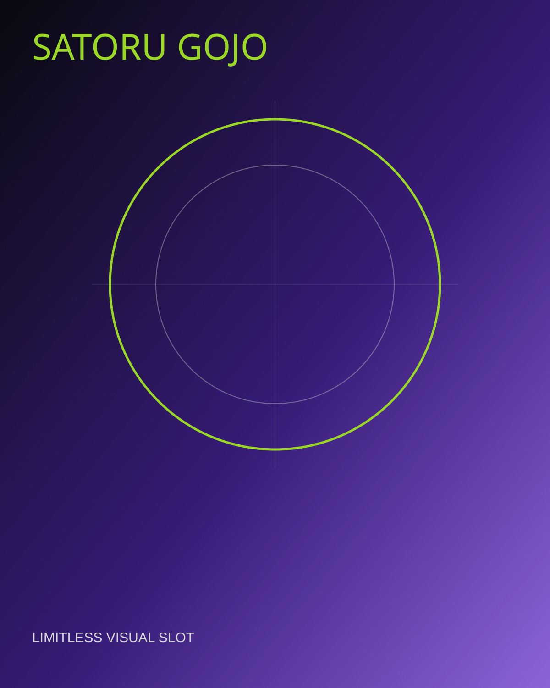
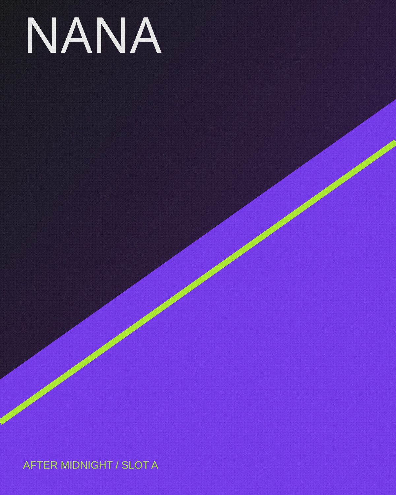
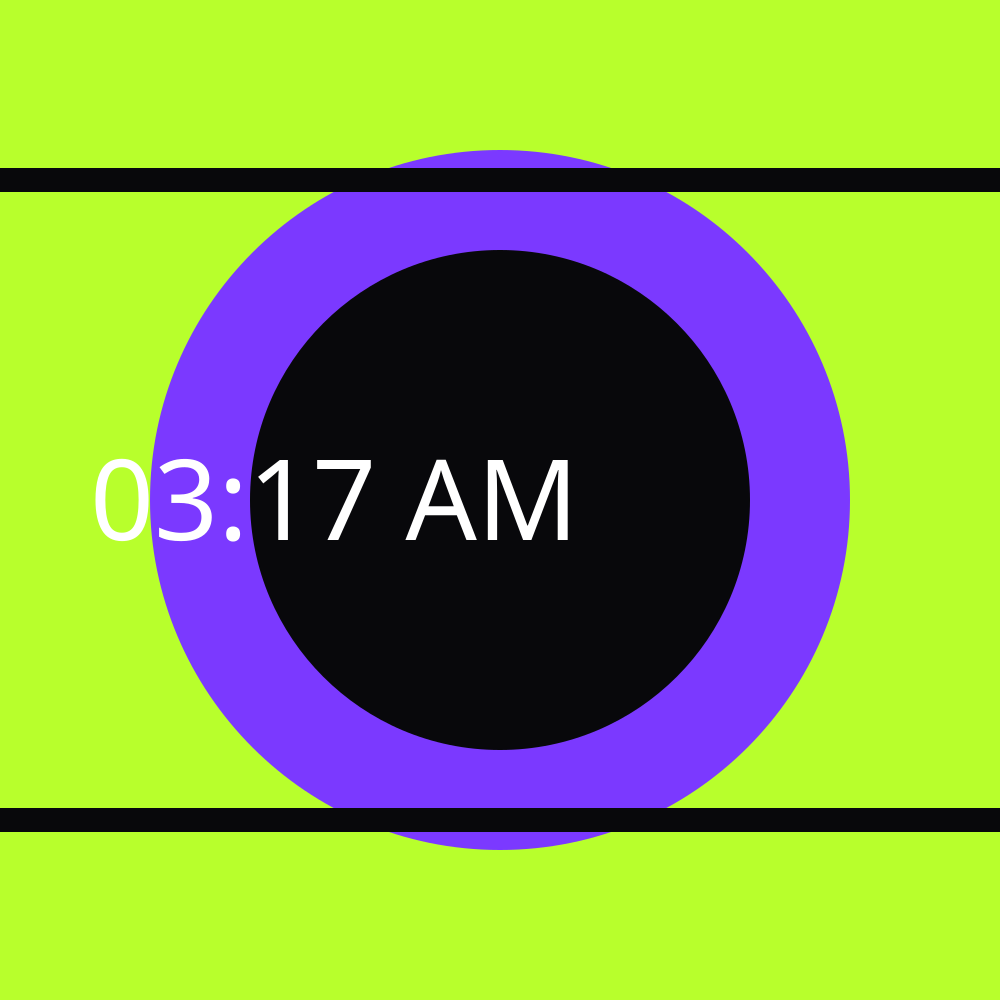
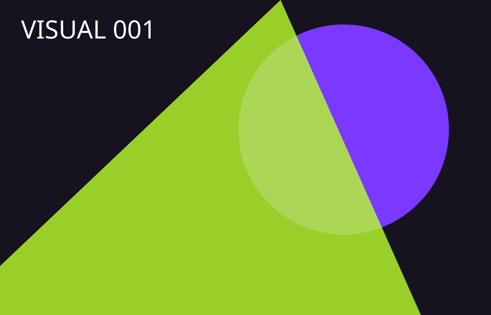
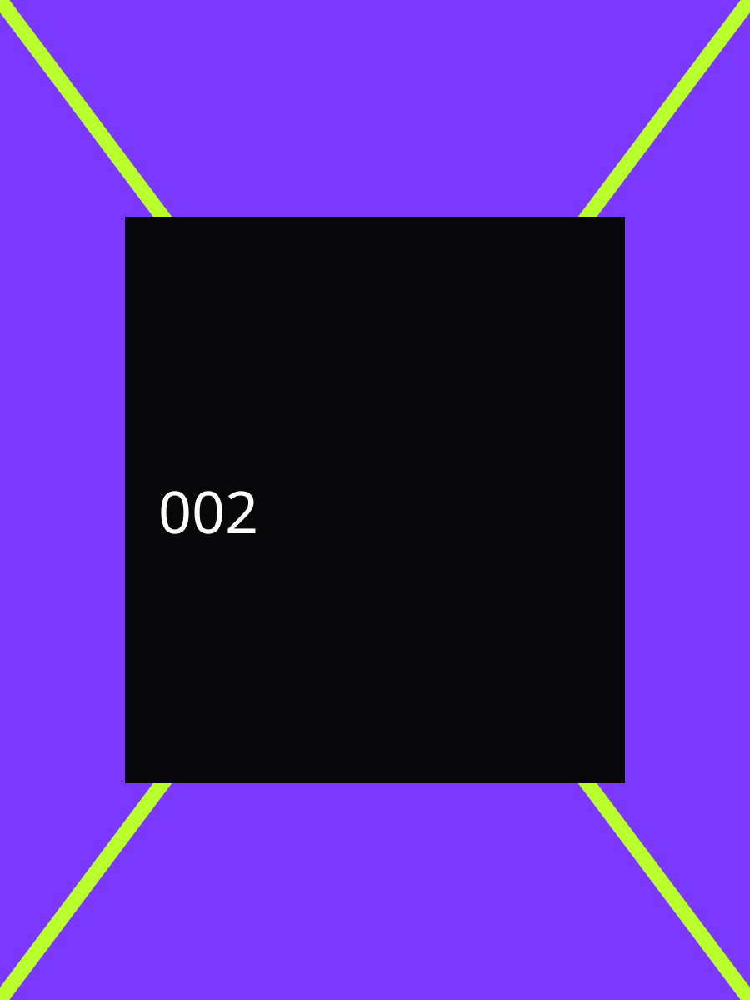
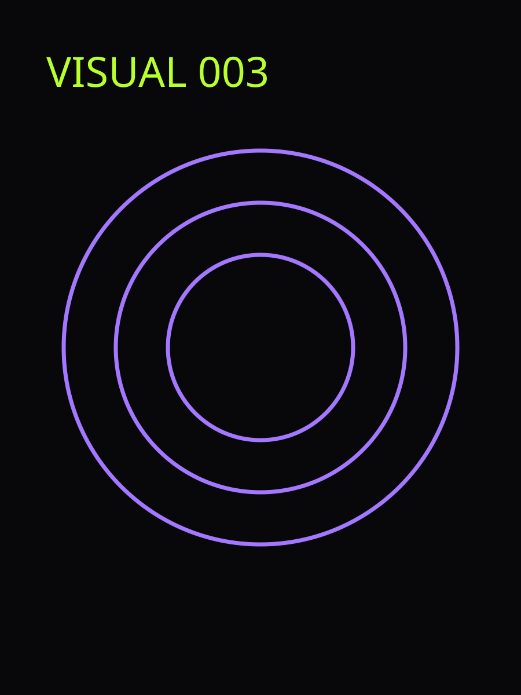
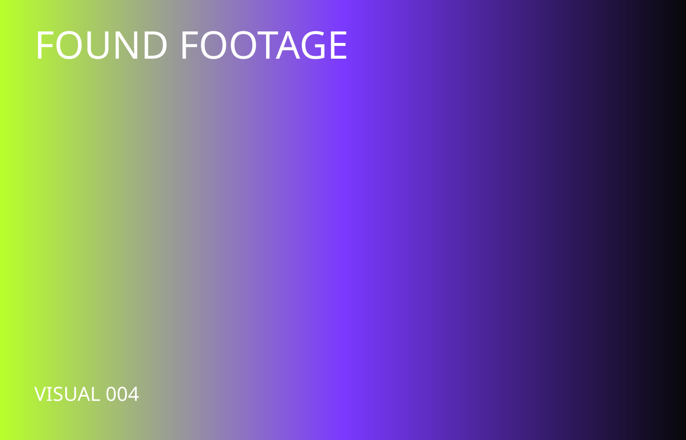

MONËY
SO BIG
TRACK SIGNAL
FULL SCALE
ANTALYA / 36.89°N 30.70°E
02 NOV 2004
SUBJECT DETECTED
AURA NOT FOUND
YEAT
TRANSMISSIONS
TRACK SIGNAL
FULL SCALE
LEFT CHANNEL
DISTORTION
VOICE INPUT
REJECTED
“HOLD YOUR BREATH
’TIL YOU PASS OUT”
SUBJECT
INDEX
ONLY VERIFIED DATA
Everything after this line is disputed, exaggerated or straight-up szr lore.
UNAUTHORIZED
CHANNELS

PRIME YEAT TRANSMISSION
TONKA CHANNEL OPEN // STILL BUFFERING
LIMITLESS REQUEST
FRIEND REQUEST: PENDING SINCE 2004

03:17 / AFTERIMAGE
NANA ON SCREEN // OSNS


UNFORTUNATE
FOOTAGE



